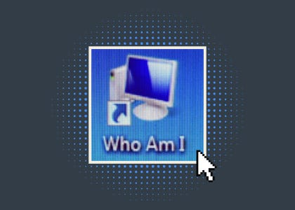
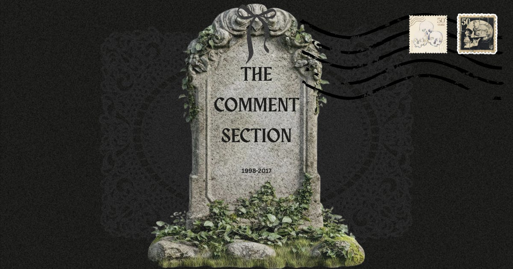
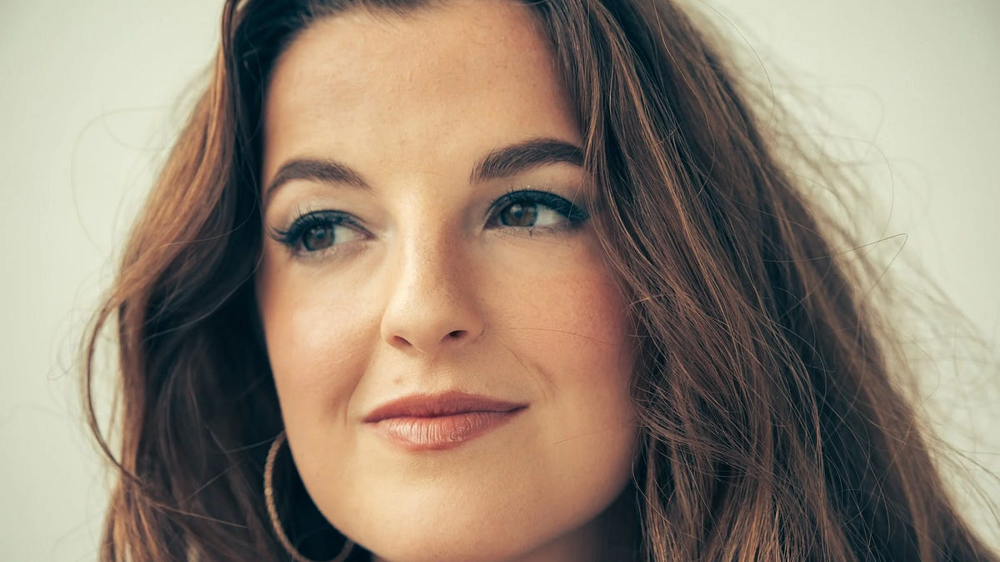
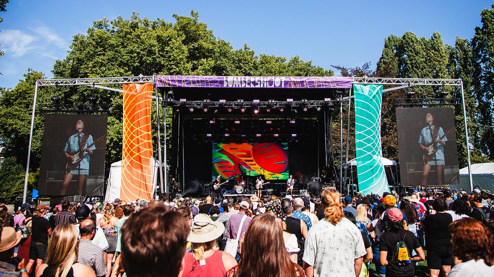

Book of the Month
A commissioned Offline Crush editorial post supported by a paid fee and gifted book box.
project / independent media
founded 2024 · ongoingAn independent media brand about pop culture, internet, music, and living in between the online and offline worlds.

music × internet · 23.48K likes

internet · curriculum

music × product

internet × psychology · interactive quiz

pop culture × internet

music · interview

Complimentary media access for original pre- and post-festival coverage.
A commissioned Offline Crush editorial post supported by a paid fee and gifted book box.